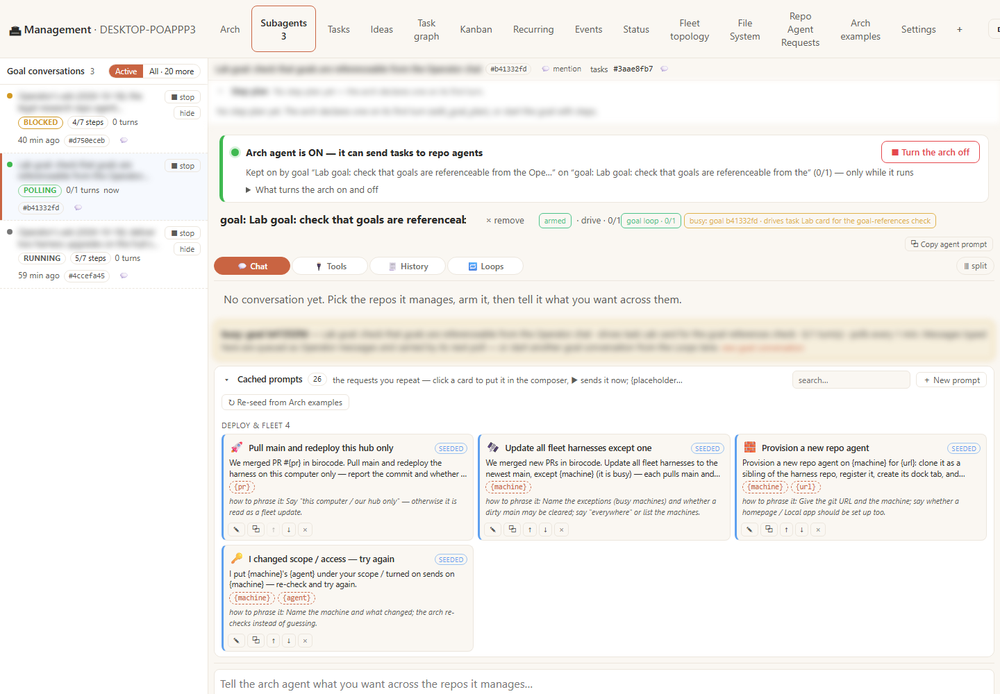
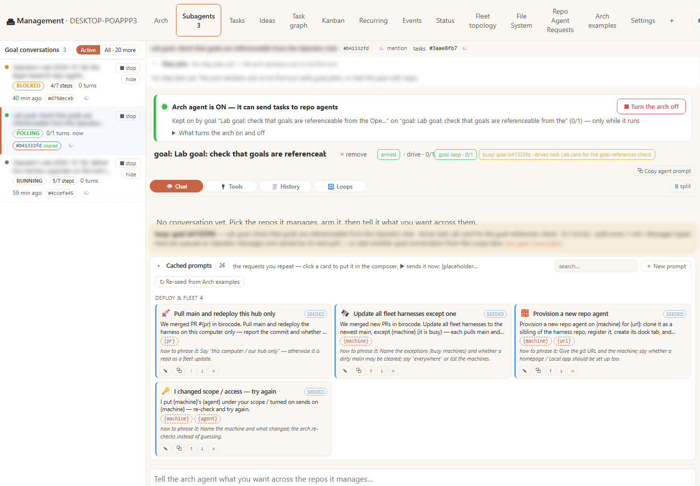
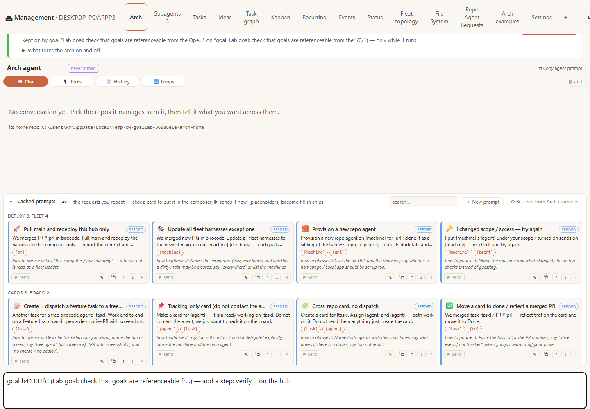
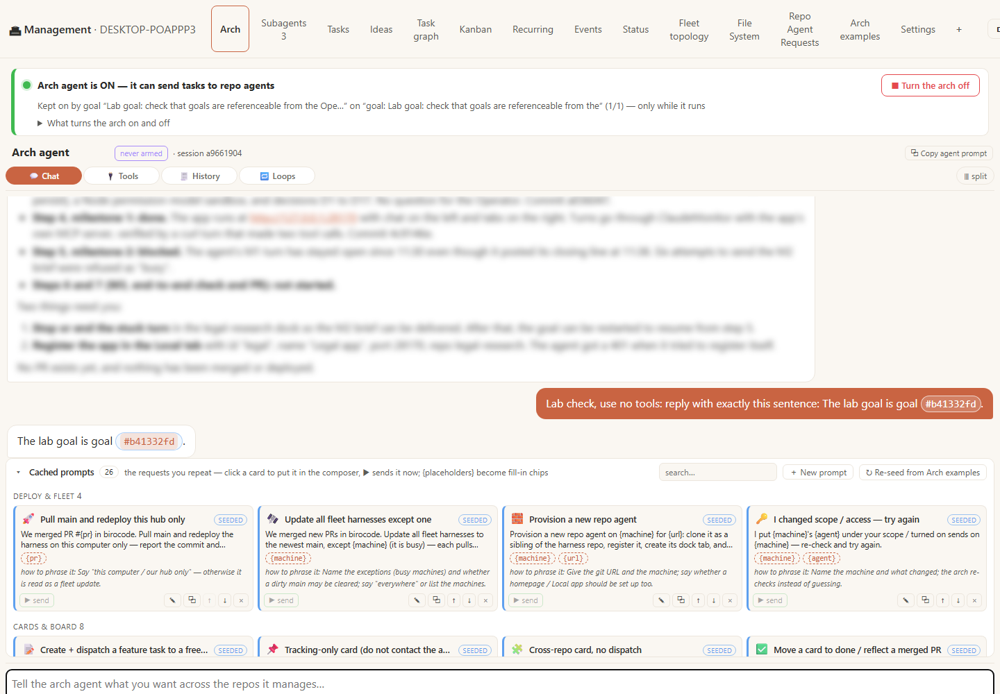
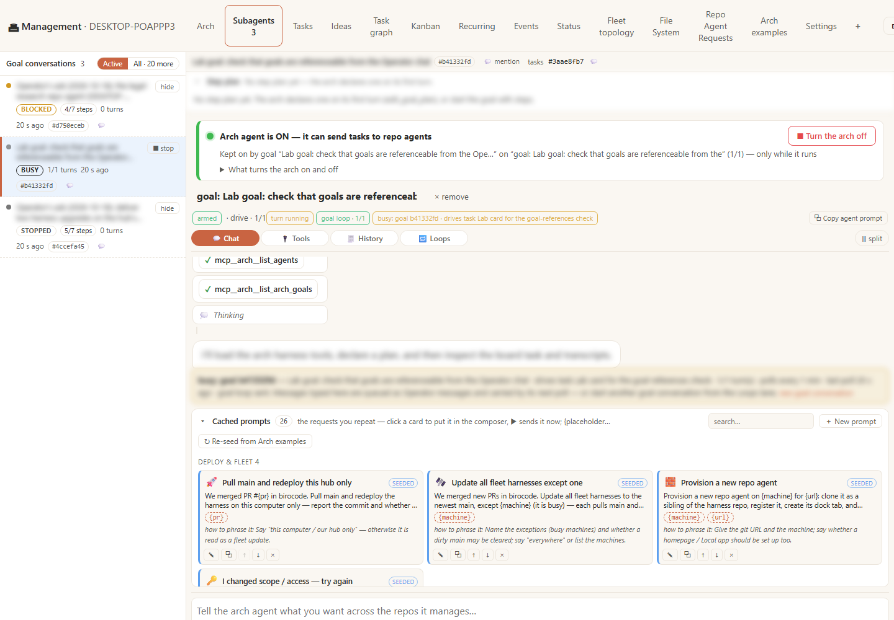

Click around: copy a ref, mention a goal, click a chip in the chat, toggle the filter
Goal conversations
Arch chat
[#84495326 done — summary from conversation "…"] Goal: install the desktop app on the test machine…
what did #4ccefa45 finish?
Before → after
| Need | Before | After |
|---|---|---|
| Name a goal to the arch | no visible id; only the arch saw it | #4ccefa45 on every row and in the header; a click copies it |
| Talk about a goal | retype a description and hope | 💬 mention puts goal 4ccefa45 (title) into the Arch composer at the caret, then you finish the sentence |
| Its tasks and agents | — | 💬 next to each task (task 5cc3e900 (title)) and each driven agent (its handle) |
| From a summary to the goal | find it by hand | "goal <id>" in the chat is a chip that opens the goal in Subagents |
| Prompts that name a goal | — | {goal} picks from the live goals, plus three seeds: add a step / continue with a cap / stop |
| Finished goals piling up | everything listed, forever | Active (running, held, or active in the last hour) | All · N more; the badge counts Active |
Live on this hub (isolated lab; the lab arch manages nothing): 21/21




